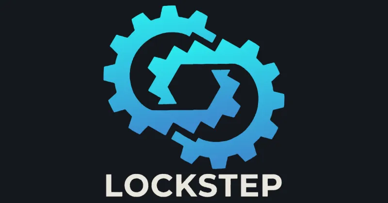

Open-source music software
Instruments, tools and libraries for making music with computers.
Chalk Walk Music is where I build audio plugins, tools for playing together over the internet, and the C++ libraries underneath them. Everything is developed in the open on GitHub.
Software

Antiphon
A NINJAM client shaped as an audio plugin: jam with people over the internet from inside your DAW, and record every player as a separate stem.
antiphon.chalkwalkmusic.com

Lockstep
A step sequencer you play, not configure: one scope-and-verb grammar across the whole surface, per-step parameter locks, and tracks that host any sound engine.
lockstep.chalkwalkmusic.com

Arps Euclidya
A modular, node-based MIDI environment: dual Euclidean rhythm engines, chord logic and 32 global macros, with multiple outputs and MPE.
arps.chalkwalkmusic.com

StarCanopy
Procedural skyboxes for space games, baked on the GPU in HDR: a lit nebula, the galaxy's band and its stars, from a seed and a few descriptive controls.
canopy.chalkwalkmusic.com
Also on GitHub
- chalkwalk-jambotBots that play in a NINJAM room on the interval grid, hold a key and a chart, and read the chat.
- solvespace-ngA fork of SolveSpace with a keyboard-first UI, an Open CASCADE kernel and multi-part assemblies.
- asteroid-generatorProcedural game asteroids sculpted from a simulated impact history, with baked PBR maps.
Libraries
The parts the plugins are built from, published on their own. C++17, JUCE-free, MIT licensed.
chalkwalk-ninjamThe NINJAM wire protocol: frames, auth, Vorbis, the interval clock.
chalkwalk-dspFilters, polyBLEP, soft clipping, interpolation, and calibrated measurement.
chalkwalk-tapeA tape deck as a library: medium, heads, layers and a polyphase resampler.
chalkwalk-physicalWaveguide and modal resonators, struck and bowed exciters, MPE mapping.
chalkwalk-musicHeader-only music theory, including Euclidean rhythms with a phase contract.
chalkwalk-seedDeterministic derivation: the same answer on every computer.
Virtual Open Electronic Improv
Once a month we open a NINJAM room and improvise together: electronic instruments, anyone welcome. Join with Antiphon from inside your DAW, or with any NINJAM client.
Dates and how to join will be posted here.
Music & video
Tutorial series on sound design and synthesis (FM, subtractive, Korg opsix, ASM Hydrasynth, Liven XFM), the Sound Design: Here:Create projects, and released music.